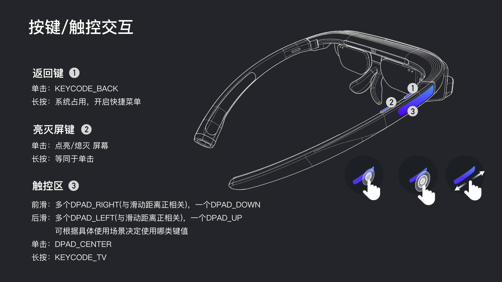

键值说明
一、眼镜按键键值

二、Dock按键键值
- Dock上仅有一颗电源键，系统占用，用户不可定制
- 单击：显示电量
- 长按：开关机
三、示例代码
@Override
public boolean onKeyDown(int keyCode, KeyEvent event) {
//长按一般使用onKeyDown触发
switch (keyCode) {
case KeyEvent.KEYCODE_TV:
Log.i(TAG,“处理长按”);
break;
...
default:
break;
}
return super.onKeyDown(keyCode, event);
}
@Override
public boolean onKeyUp(int keyCode, KeyEvent event) {
//前滑后滑一般使用onKeyUp触发
switch (keyCode) {
case KeyEvent.KEYCODE_DPAD_DOWN:
Log.i(TAG,“处理前滑”);
break;
case KeyEvent.KEYCODE_DPAD_UP:
Log.i(TAG,“处理后滑”);
break;
...
default:
break;
}
return super.onKeyUp(keyCode, event);
}